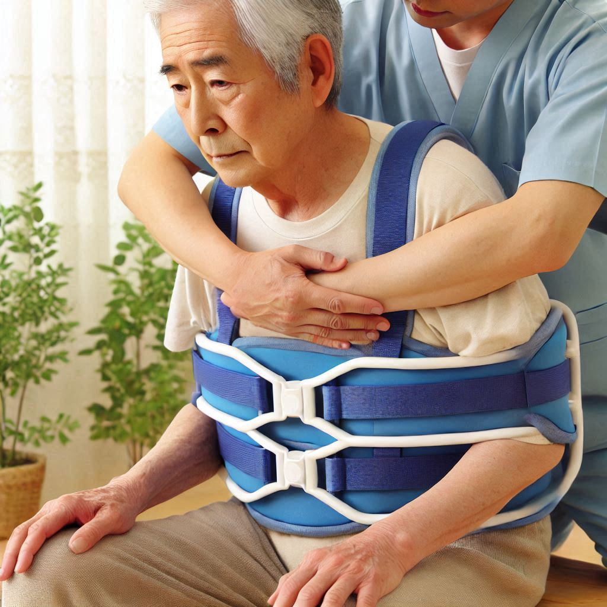

Administración de Medicamentos
Nos encargamos de la correcta administración de medicamentos:
- Vía inyectable: Aplicación segura y profesional.
- Vía oral: Supervisión y asistencia en las tomas.
- Registro: Seguimiento detallado del tratamiento.
- Prevención: Minimización de riesgos y errores.
Curación de Heridas Simples
Atención especializada para promover la cicatrización efectiva:
- Limpieza y desinfección: Proceso higiénico y seguro.
- Vendaje adecuado: Aplicación según el tipo de herida.
- Seguimiento: Evaluación constante del proceso de recuperación.
- Prevención de infecciones: Uso de material estéril.
Apoyo en Cambios de Posición
Prevención de lesiones y mejora del bienestar del paciente:
- Rotaciones periódicas: Cada 2-3 horas para evitar úlceras.
- Técnicas adecuadas: Uso de protocolos seguros.
- Comodidad: Adaptación del entorno para mayor confort.
- Colaboración: Trabajo en equipo con cuidadores y familia.

Estimulación Cognitiva
Fomentamos la actividad mental y el bienestar emocional mediante:
- Juegos de memoria: Ejercicios para activar la mente.
- Lectura: Fomento del interés y la concentración.
- Conversación: Espacios para compartir y reflexionar.
- Actividades personalizadas: Según gustos e intereses del paciente.
Exploración Médica Básica
Evaluación rutinaria para garantizar el estado de salud:
- Revisión cada 3 días: Verificación de signos y síntomas.
- Evaluación física: Exploración general detallada.
- Prevención: Identificación de riesgos y signos de alerta.
- Recomendaciones: Guía para el cuidado continuo.

.png)